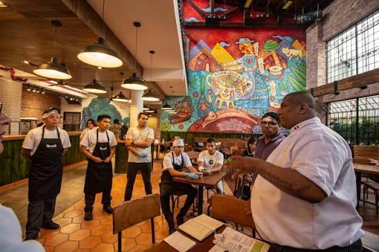
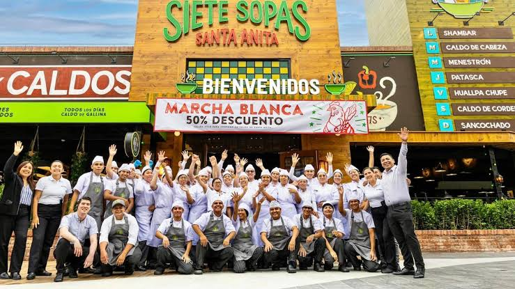

Siete Sopas es un restaurante emblemático de Lima con más de 20 años de tradición. Nacimos con el objetivo de preservar y compartir las recetas más auténticas de la gastronomía criolla peruana. Siete Sopas es un restaurante emblemático de Lima con más de 20 años de tradición. Nacimos con el objetivo de preservar y compartir las recetas más auténticas de la gastronomía criolla peruana. Fundado en el corazón de la ciudad, nuestro principal propósito ha sido ofrecer platos caseros llenos de sabor y nostalgia. A lo largo de los años nos hemos consolidado como el lugar favorito de muchas familias limeñas. Nuestra atención 24 horas nos permite estar presentes en los momentos más especiales: después de una salida, almuerzos familiares o cenas rápidas pero sabrosas.


Desde nuestros inicios en el corazón de Lima, nos hemos dedicado a ofrecer sopas caseras preparadas con ingredientes frescos y el cariño de siempre. Hoy somos un referente de la comida peruana 24 horas, donde cada plato cuenta una historia de tradición y sabor.
Recetas transmitidas de generación en generación
Ingredientes frescos y de primera calidad
Un ambiente cálido y acogedor para todos